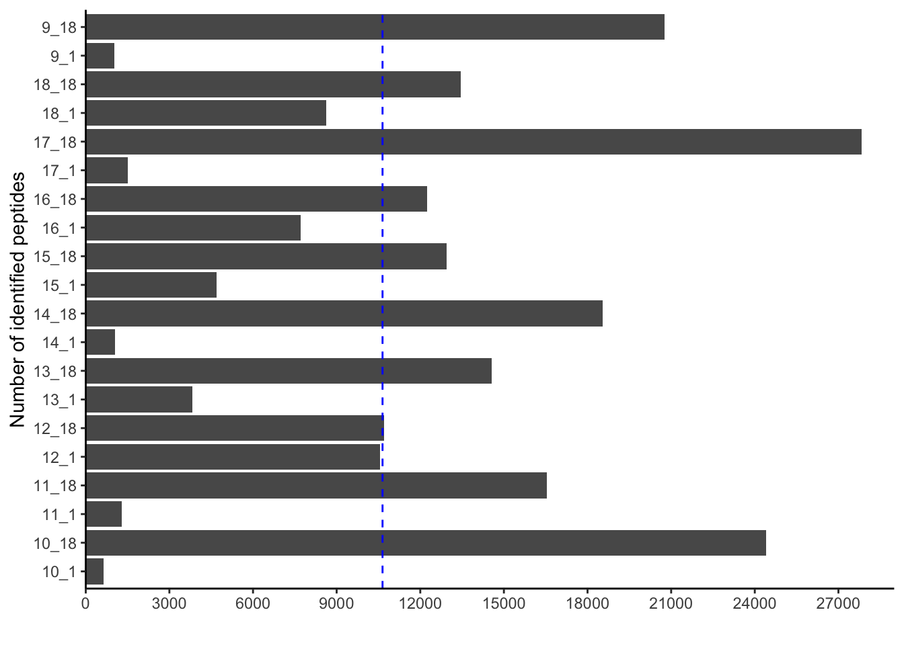
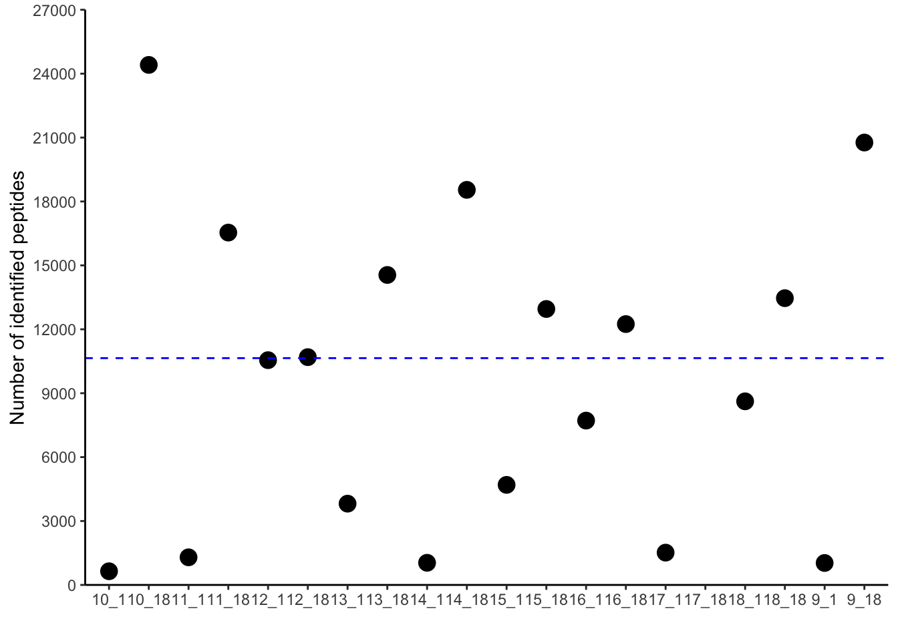
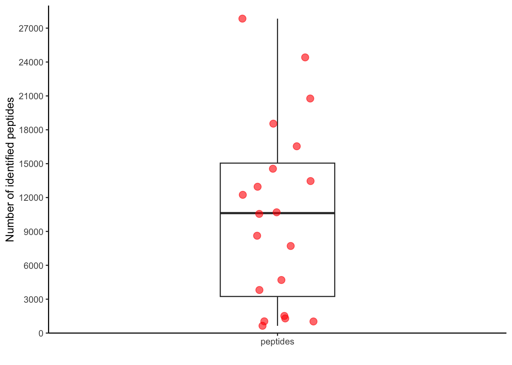
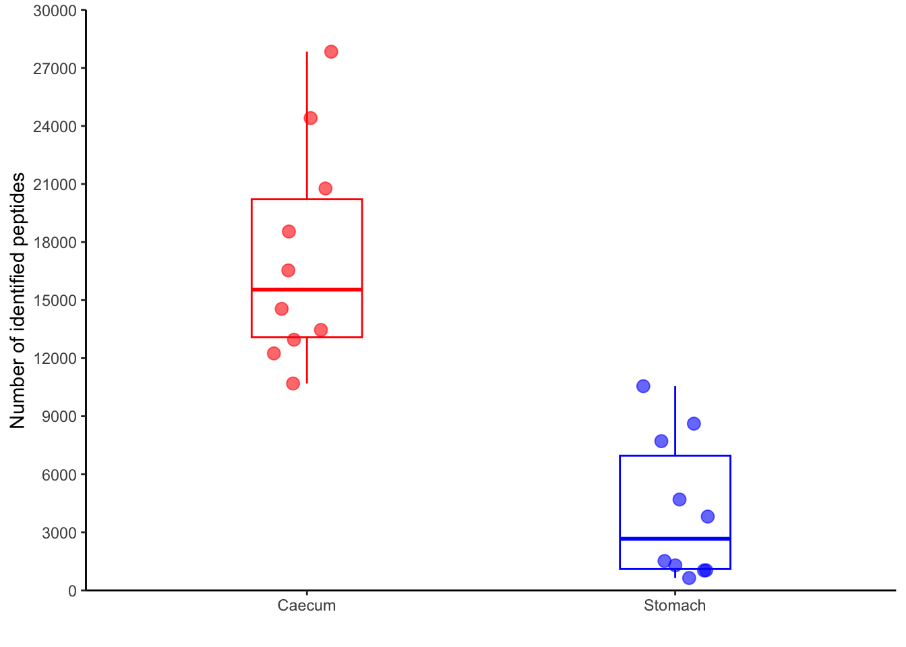
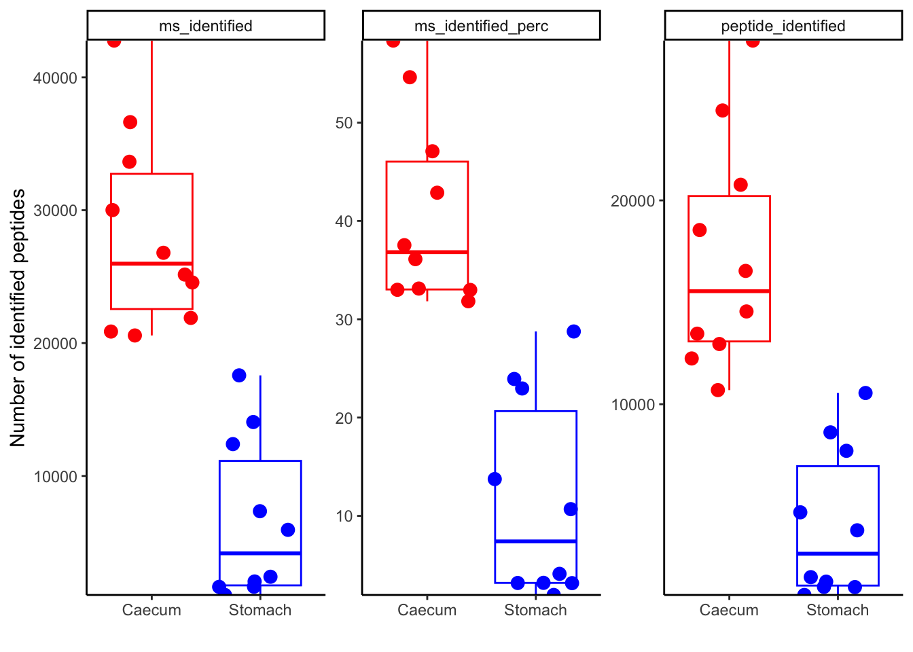

## libraries
library(tidyverse)
# input data
# Metaproteomics quality control data from MaxQuant
df_qc <- read.table("../../project/rawdata/final_summary.tsv",
header = TRUE,
sep = "\t",
check.names = FALSE)
# Metadata
metadata <- read.table("../../project/rawdata/metadata_metapro.txt",
header = TRUE,
sep = "\t"
)Quality control of metapreotomics data
Set-up environment
Clean metadata
metadata_clean <- metadata %>%
rename(sample = Probenname) %>%
mutate(sample = str_replace_all(sample, "\\.", "_")) %>%
separate(Abschnitt,
into = c("region", "source",
sep = " "
)
)Clean quality data
clean_qc <- df_qc %>%
select(
"Raw file",
"Peptide Sequences Identified",
"MS/MS Identified",
"MS/MS Identified [%]"
) %>%
rename(
sample = "Raw file",
peptide_identified = "Peptide Sequences Identified",
ms_identified = "MS/MS Identified",
ms_identified_perc = "MS/MS Identified [%]"
) %>%
filter(sample != "Total")Create a summary table
max(clean_qc$peptide_identified)[1] 27841sapply(clean_qc[2:4], mean)peptide_identified ms_identified ms_identified_perc
10646.400 17453.600 26.159 summary_table <- data.frame(
stats = c("Max", "Mean", "Min"),
peptide_identified = round(c(25687.0, 11420.1500, 472.00)),
ms_identified = round(c(28442.0, 13235.5000, 766.00)),
ms_identified_perc = round(c(29.9, 14.8755, 0.98), 2)
)
summary_table stats peptide_identified ms_identified ms_identified_perc
1 Max 25687 28442 29.90
2 Mean 11420 13236 14.88
3 Min 472 766 0.98write.csv(summary_table, "../../project/rawdata/summary.csv")Pivot data
pivoted_data <- clean_qc %>%
pivot_longer(-(sample), names_to = "qc", values_to = "value")
head(pivoted_data)# A tibble: 6 × 3
sample qc value
<chr> <chr> <dbl>
1 10_1 peptide_identified 642
2 10_1 ms_identified 1045
3 10_1 ms_identified_perc 1.96
4 10_18 peptide_identified 24411
5 10_18 ms_identified 36628
6 10_18 ms_identified_perc 54.6 Plot the data
pivoted_data %>%
filter(qc=="peptide_identified") %>%
ggplot(aes(x=value,
y=sample)) +
geom_bar(stat = "identity") +
geom_vline(aes(xintercept=mean(value)),
color="blue", linetype="dashed") +
scale_x_continuous(expand = c(0,0),
limits = c(0, 29000),
breaks=seq(0, 29000, by=3000)) +
labs(x="",
y="Number of identified peptides") +
theme_classic()
pivoted_data %>%
filter(qc=="peptide_identified") %>%
ggplot(aes(x=sample,
y=value)) +
geom_point(size=4)+
geom_hline(aes(yintercept=mean(value)),
color="blue", linetype="dashed") +
scale_y_continuous(expand = c(0,0),
limits = c(0, 27000),
breaks=seq(0, 27000, by=3000)) +
labs(x="",
y="Number of identified peptides") +
theme_classic()Warning: Removed 1 rows containing missing values (`geom_point()`).
pivoted_data %>%
filter(qc=="peptide_identified") %>%
ggplot(aes(x="peptides",
y=value)) +
geom_boxplot(width = 0.3)+
geom_jitter(width = 0.1,
size = 3,
color = "red",
alpha = 0.6) +
scale_y_continuous(expand = c(0,0),
limits = c(0, 29000),
breaks=seq(0, 29000, by=3000)) +
labs(x="",
y="Number of identified peptides") +
theme_classic()
pivoted_data %>%
filter(qc=="peptide_identified") %>%
inner_join(metadata_clean, by="sample") %>%
ggplot(aes(x=region,
y=value,
color=region)) +
geom_boxplot(width = 0.3,
outlier.shape = NA,
show.legend = FALSE)+
geom_jitter(width= 0.1,
size=3,
show.legend = FALSE,
alpha = 0.6) +
scale_y_continuous(expand = c(0,0),
limits = c(0, 30000),
breaks=seq(0, 30000, by=3000)) +
labs(x="",
y="Number of identified peptides") +
scale_color_manual(values = c("red", "blue")) +
theme_classic()
pivoted_data %>%
inner_join(metadata_clean,
by = "sample"
) %>%
ggplot(aes(x = region,
y = value,
color = region
)
) +
geom_boxplot(outlier.shape = NA,
show.legend = FALSE
) +
geom_jitter(size = 3,
show.legend = FALSE
) +
scale_y_continuous(expand = c(0, 0),
# limits = c(0, 27000),
# breaks=seq(0, 27000, by=3000)
) +
labs(x = "",
y = "Number of identified peptides"
) +
scale_color_manual(values = c("red", "blue")
) +
theme_classic() +
facet_wrap(~qc,
scales = "free"
)